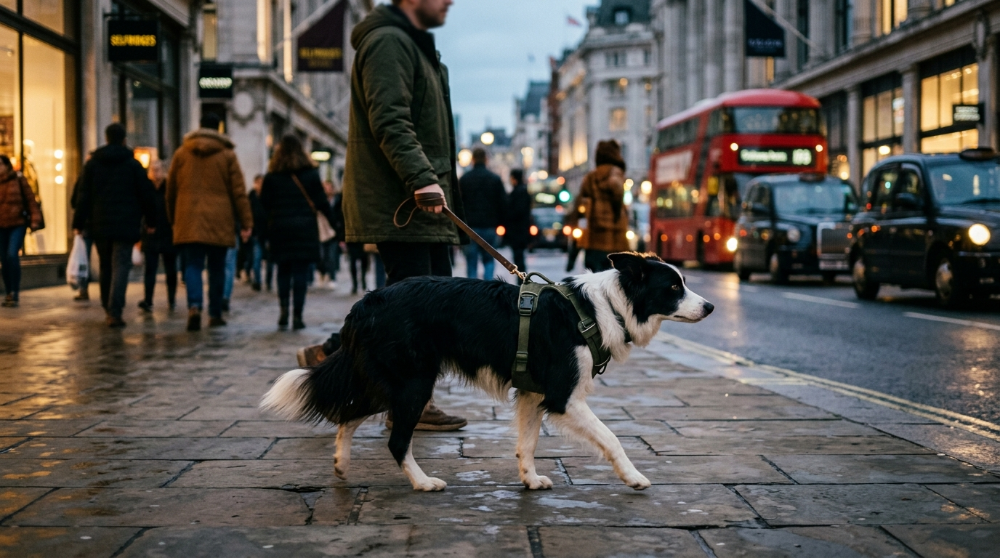

Before obedience training begins, the home environment must be configured so unwanted behaviors are physically impossible to rehearse. This guide establishes the safe base zone, audits toxic household risks, and builds a realistic healthcare baseline.
SECTION 1.1•FOCUS: Environment & Rest•5 min read
The 2-Door Buffer Zone & Base Setup
The Situation
A newly arrived puppy or rescue dog explores frantically, paces continuously, and chews baseboards out of sensory overwhelm.
The Science & Mechanics
Canine nervous systems require bounded, low-stimulus territory to down-regulate sympathetic arousal. Open floor plans overstimulate vigilance circuits.
Action Protocol
Construct a 2-Door Buffer: Exercise pen attached to an open crate in a low-traffic corner (never in entryways or busy hallways).
Substrate layering: Waterproof rubber mat -> washable absorbent pad -> high-density orthopedic bed -> 1 safe natural chew.
The Open Den Rule: Crate doors stay open during waking hours. The pen provides 4-6 square meters of safe containment.
SECTION 1.2•FOCUS: Safety & Vet Prep•4 min read
The Toxic Sweep & Poison Triage
The Situation
Your dog grabs a dropped pill, chews an unfamiliar indoor plant, or raids the laundry detergent shelf.
The Science & Mechanics
Xylitol (birch sugar), human NSAIDs, dark chocolate, lilies, and snail bait exhibit variable absorption windows (15m to 12h). Symptoms often appear long after organ damage begins.
Action Protocol
Immediate extraction: Remove remaining material safely without engaging in a chase game.
Evidence capture: Retain packaging, label, plant clipping, or photograph immediately.
Direct Emergency Contact: Call the Australian Animal Poisons Helpline (1300 869 738) or emergency vet with dog's weight (kg), product name, and time elapsed.
NEVER induce vomiting with salt (fatal hypernatremia risk).
SECTION 1.3•FOCUS: Healthcare & Budget•5 min read
First-Year Healthcare & Financial Baseline
The Situation
New owners are caught off-guard by preventative care, council registrations, and surprise emergency vet bills.
The Science & Mechanics
Routine core vaccines (C3/C5), heartworm macrocyclic lactones, and isoxazoline tick control prevent catastrophic clinical crises.
Action Protocol
Initial Consultation: Book health check within 72 hours of arrival. Verify microchip on Central Animal Records / Petsafe.
Council Registration: Mandatory in Victoria by 3 months of age under the Domestic Animals Act 1994.
Financial Architecture: Maintain $100-$150 AUD/mo routine budget plus a dedicated $2,000 AUD liquidity buffer or >=80% insurance policy.
GUIDE 2 OF 7
Guide 2 — The Transition Phase
Early Friction & Biological De-Escalation
The first 30 days are when routines harden. This guide replaces frustration with biological predictability, solving house-training delays, needle-sharp arousal biting, and puppy blues.
SECTION 2.1•FOCUS: House Training•5 min read
The Biological Window: Potty Mastery
The Situation
Your puppy eliminates outside, walks back in, and deposits a puddle on the living room rug 3 minutes later.
The Science & Mechanics
Puppies lack complete urinary sphincter muscle control before 16 weeks. Movement, waking, and eating trigger the gastrocolic reflex within 10-20 minutes.
Action Protocol
The Bladder Formula: Age in Months + 1 = Maximum Holding Time in Hours (e.g. 2 months = 3h max while asleep; active intervals are 30-45m).
The 3 Biological Triggers: Take the dog outside immediately upon waking, 10-15m post-meal, and after 10m of physical play.
The 2-Second Pay Window: Deliver high-value meat reward within 1 to 2 seconds of squat completion while still outdoors.
Enzymatic Cleanup: Clean accidents with enzymatic bio-cleaners to destroy uric acid crystals (never use ammonia).
SECTION 2.2•FOCUS: Play & Biting•4 min read
The Reverse Timeout: Arousal Biting
The Situation
During evening playtime, the puppy clamps down on hands, jeans, or ankles, biting harder when pushed away.
The Science & Mechanics
Pushing, squealing, and wrestling stimulate predatory play drive. Human reaction functions as an active reinforcer.
Action Protocol
The 3-Second Disengagement: The instant teeth touch skin, say a neutral marker ('Too bad') in a flat voice.
The Reverse Timeout (RTO): Stand up, cross arms, step over the baby gate or leave the room for exactly 15 seconds.
Calm Re-entry: Return without speaking. Offer a tactile replacement (frozen KONG, yak chew, or rope toy).
Rule: Teeth on human = social attention instantly terminates.
SECTION 2.3•FOCUS: Mindset & Routine•4 min read
Decompressing Owner Overwhelm & 3-3-3 Rule
The Situation
At day 5, the owner feels profound exhaustion, crying spells, and deep anxiety over having made a mistake.
The Science & Mechanics
Sleep deprivation and vigilance elevate human cortisol, while the canine cortisol reset curve requires 72+ hours post-rehoming.
Action Protocol
The 3-3-3 Milestone Filter: Day 3 (Overwhelmed/Shut-down) -> Week 3 (Learning routine) -> Month 3 (Attachment & true personality).
Enforced Nap Cadence: 1 hour awake -> 2 hours quiet rest in the Base Zone. Puppies require 18-20 hours of daily sleep.
Radical Simplification: Drop complex obedience tricks. Focus solely on sleep, potty timing, and calm supervision.
GUIDE 3 OF 7
Guide 3 — The Empathy Engine
Canine Body Language & Clinical Observation
Dogs communicate through subtle physiological micro-signals long before they growl or bark. This guide teaches owners how to read the whole dog and never punish vital communication signals.
SECTION 3.1•FOCUS: Body Language•5 min read
Canine Micro-Signals & Distance Seeking
The Situation
A dog turns its head away, licks its nose, or yawns when approached by a stranger, but the owner thinks it is just tired or cute.
The Science & Mechanics
Canine stress cascades through subtle displacement behaviors before escalating to active flight or fight responses.
Action Protocol
Level 1 Signals (Early Worry): Nose licks (in absence of food), yawning (when not tired), blinking, head turns away from trigger.
The 3-Foot Buffer: The instant Level 1-2 signals cluster, create 1 meter of space from the trigger.
SECTION 3.2•FOCUS: De-escalation•5 min read
The Warning Ladder: Never Punish the Growl
The Situation
Your dog growls when someone approaches their food bowl or sofa spot, and the owner scolds the dog to show 'dominance'.
The Science & Mechanics
Growling is a vital communication alarm on the Ladder of Aggression. Suppressing the growl produces a dog that bites without warning.
Action Protocol
The Escalation Ladder: Calming signals -> Stiffening -> Low Growl -> Snarl -> Air Snap -> Contact Bite.
De-escalation Procedure: Freeze immediately. Avoid direct eye contact. Slowly step back 2 paces to relieve spatial pressure.
Never Scold: Treat the growl as vital data about discomfort. Identify and manage the environmental trigger.
Manage the Trigger: If food-related, feed in an isolated, secure room without human traffic.
SECTION 3.3•FOCUS: Clinical Health•4 min read
The Medical Baseline Filter
The Situation
A previously friendly dog suddenly begins snapping when touched near the hips, refusing stairs, or barking at night.
The Science & Mechanics
Over 30% of acute behavioral changes are directly linked to underlying medical discomfort (osteoarthritis, otitis, dental pain, gut distress).
Action Protocol
The 48-Hour Somatic Check: Audit gait stiffness, hesitation on stairs, ear-touch sensitivity, and appetite changes.
Veterinary Rule: Before hiring a behaviorist for sudden fear or aggression, obtain a thorough veterinary pain examination.
Trial Therapy: Discuss diagnostic pain relief trials with your veterinarian if physical examination is inconclusive.
GUIDE 4 OF 7
Guide 4 — The Social Filter
Safe Exposure & Urban Resilience
Real socialization is not about forcing your dog to greet every dog and human. This guide builds environmental neutrality, distance management, and cooperative handling confidence.
SECTION 4.1•FOCUS: Socialisation•5 min read
Quality Over Quantity: Socialisation ≠ Contact
The Situation
An owner takes a 12-week puppy to a crowded off-leash dog park, allowing chaotic dogs to overwhelm the puppy.
The Science & Mechanics
The primary developmental window closes between 12-16 weeks. Traumatic single-event learning during fear periods can cause permanent reactivity.
Action Protocol
The Neutrality Protocol: Sit on a quiet park bench 30m away from paths. Reward calm observation of cyclists, prams, and dogs.
The 3-Second Greeting Rule: If greeting on-leash, allow max 3 seconds (sniff, sniff, call away with praise) before arousal turns into tension.
Avoid Chaotic Dog Parks: Off-leash dog parks encourage bullying, defensive aggression, and uncontrolled greetings.
SECTION 4.2•FOCUS: Reactivity•5 min read
The 3-Zone Threshold Bubble
The Situation
Your dog spots another dog across the street, freezes, whines, and lunges at the end of the lead.
The Science & Mechanics
When a dog crosses their threshold distance, amygdala activation suppresses cognitive learning and appetite.
Action Protocol
Green Zone (Sub-Threshold): Loose body, glances at trigger, takes treats easily. (This is where counter-conditioning works).
Yellow Zone (Threshold Edge): Stiffens, fixes gaze, slow treat taking. (Action: Increase distance by 5-10m immediately).
Red Zone (Over-Threshold): Lunging, barking, spinning, refusing food. (Action: Turn around, jog away, evacuate without scolding).
Arcing Maneuver: Never approach head-on. Step into driveways or arc widely across the road.
SECTION 4.3•FOCUS: Husbandry & Grooming•4 min read
Cooperative Care & Low-Stress Handling
The Situation
Nail trimming or ear cleaning requires three adults pinning the dog down while the dog thrashes in terror.
The Science & Mechanics
Restraint-based force generates learned helplessness or active defensive biting. Cooperative care gives the dog a predictable consent mechanism.
Action Protocol
The Chin Rest Consent Cue: Train the dog to rest their chin on your open hand for high-value rewards.
The Consent Contract: As long as the chin stays down, gentle handling proceeds. If chin lifts, handling stops immediately.
Desensitization Ladder: Day 1-3 (touch paw with clipper handle) -> Day 4-7 (tap nail) -> Day 8+ (trim 1 nail tip -> jackpot treat).
GUIDE 5 OF 7
Guide 5 — The Sync Mechanics
Reward Timing, Cues & Household Consistency
Dogs learn through precise temporal association. This guide tightens marker timing, eliminates accidental rewards for bad behavior, and aligns the whole family on one clear cue set.
SECTION 5.1•FOCUS: Marker Training•4 min read
The 1-Second Pay Window & Precision Markers
The Situation
The dog sits, the owner says 'good boy,' fumbles in their pocket for 8 seconds, and delivers a treat after the dog has already stood up.
The Science & Mechanics
Associative learning requires reinforcer delivery within a 0.5-1.5 second window. Late rewards reinforce the movement occurring at delivery.
Action Protocol
Charge the Marker: Select a crisp, short syllable ('Yes!') or clicker. Pair: Click -> Treat immediately 20 times.
The 3-Step Sequence: Behavior Occurs -> Marker Fired -> Treat Delivered to mouth within 2 seconds.
Treat Accessibility: Wear a treat pouch or keep pea-sized rewards ready in hand, not buried in pockets.
SECTION 5.2•FOCUS: Extinction & Habits•5 min read
Extinguishing Accidental Payoffs
The Situation
The dog jumps on guests, steals kitchen towels, or barks at the dinner table, and family members alternate between scolding and laughing.
The Science & Mechanics
Intermittent variable reinforcement schedules create the most durable, hard-to-extinguish habits in behavioral psychology.
Action Protocol
Audit Accidental Payoffs: Jumping (guests pet dog) -> Counter-surfing (roast beef left on edge) -> Stealing items (chase game).
Management Fixes: Clean benches completely. Put dog on leash with guest arrival so jumping is physically prevented.
Extinction Burst Awareness: When reinforcement stops, the behavior temporarily spikes in intensity before dying out. Stay consistent.
SECTION 5.3•FOCUS: Household Consistency•4 min read
The Household Cue Constitution
The Situation
Mom says 'Down' (lie on floor), Dad says 'Down' (get off couch), and the kids yell 'Off', leaving the dog completely bewildered.
The Science & Mechanics
Canines discriminate specific auditory phonemes paired with body postures, not general semantic concepts.
Action Protocol
Define the Vocabulary: 'Sit' (bottom down), 'Drop' (chest on floor), 'Off' (paws off furniture/humans), 'Wait' (pause at thresholds).
Release Cue: Establish an explicit release word ('Free' or 'Break') so the dog knows when a position ends.
The Single Cue Rule: Say the verbal cue once. If ignored, do not repeat it 5 times. Guide with a physical hand lure.

GUIDE 6 OF 7
Guide 6 — The Urban Flow & The Shield
Public Life & Distraction Management
Urban streets are sensory obstacle courses. This guide establishes structured walking games, eliminates window barking triggers, and builds sub-panic independence.
SECTION 6.1•FOCUS: Leash Manners•5 min read
The 1-2-3 Engagement Walk
The Situation
Your dog pulls forcefully on the leash, zig-zagging erratically between smells and dragging you down the footpath.
The Science & Mechanics
Rhythmic, predictable verbal count patterns engage the parasympathetic nervous system and restore handler focus.
Action Protocol
Split the Walk: 70% slow sniffing on a 2-3m fixed lead (sniffing lowers heart rate), 30% structured focus walking.
The 1-2-3 Pattern Game: Count out loud '1, 2, 3'. On '3', deliver a treat at your trouser seam. Practice 20 times in driveway.
Deploy on Street: When approaching a distracting dog, start counting '1, 2, 3'. On '1', the dog turns toward you in anticipation.
SECTION 6.2•FOCUS: Territorial Barking•4 min read
The Environmental Shield: Window Barking
The Situation
The dog perches on the back of the sofa, barking frantically at mail carriers and pedestrians through the front window.
The Science & Mechanics
When a dog barks at a pedestrian who walks away, the dog believes their barking chased the threat off, cementing a self-reinforcing loop.
Action Protocol
The Physical Shield: Apply static frosted window film to the lower 60cm of front windows. Blocks visual stimuli without losing light.
Acoustic Masking: Position a brown noise machine or radio near front hallways to mask sudden street sounds.
Spatial Setup: Move couches and chairs away from window sills to eliminate elevated watchtower perches.
SECTION 6.3•FOCUS: Separation Confidence•5 min read
Independence Micro-Dosing: Alone Time
The Situation
The dog whines, scratches doors, drools, or paces frantically whenever you pick up keys or step out of sight.
The Science & Mechanics
Separation distress is a neurological panic state. Desensitization must occur entirely below the threshold of anxiety.
Action Protocol
De-Weaponize Departure Cues: Pick up keys -> sit on couch. Put on coat -> make tea. Repeat 10 times daily until cues evoke zero arousal.
Micro-Dosing Alone Time: Step outside front door for 5 seconds -> return calmly before whining begins.
Gradual Progression: Advance to 15s -> 30s -> 1m -> 2m -> 5m. If vocalization occurs, cut duration in half on the next trial.
GUIDE 7 OF 7
Guide 7 — The Freedom Framework
Expanding Independence & Professional Escalation
Freedom is earned through proven reliability. This guide structures room-by-room expansion, manages adolescent brain remodeling, and prepares a clinical intake brief when professional help is needed.
SECTION 7.1•FOCUS: House Freedom•4 min read
The Single-Room Expansion Trial
The Situation
After two good weeks in the kitchen, the owner opens the whole house, and the dog immediately pees in the spare bedroom and chews a rug.
The Science & Mechanics
Canine behavioral reliability is spatially bounded and does not automatically generalize to unmapped rooms.
Action Protocol
The 3 Milestones: 14 consecutive days zero accidents + 5s chew redirection + 30m independent rest in Base Zone.
The Room Trial: Open 1 adjacent room (living room). Supervise for 30-45m while humans are actively present.
Unsupervised Access: Only after 7 consecutive accident-free days under supervision do you allow short unsupervised access.
SECTION 7.2•FOCUS: Adolescence (6-14 Mo)•5 min read
Adolescent Regression Triage
The Situation
At 8 months of age, your previously obedient puppy suddenly forgets recalls, tests boundaries, and barks at fire hydrants.
The Science & Mechanics
Adolescence brings massive hormonal surges (testosterone/estrogen) and synaptic pruning in the prefrontal cortex, reducing impulse control.
Action Protocol
Temporarily Lower Criteria: Treat the adolescent dog like an older puppy. Re-attach a 10m long line for outdoor recalls.
Secondary Fear Period Care: If the dog is terrified of a novel object, do not force confrontation. Arc away, feed treats at distance, move on.
Scent Enrichment: Replace physical fetch with nose-work search games to exhaust cognitive energy without spiking adrenaline.
SECTION 7.3•FOCUS: Professional Handoff•5 min read
Clinical Escalation & Trainer Intake Prep
The Situation
Despite consistent management, your dog exhibits persistent resource guarding, stranger fear, or severe reactivity.